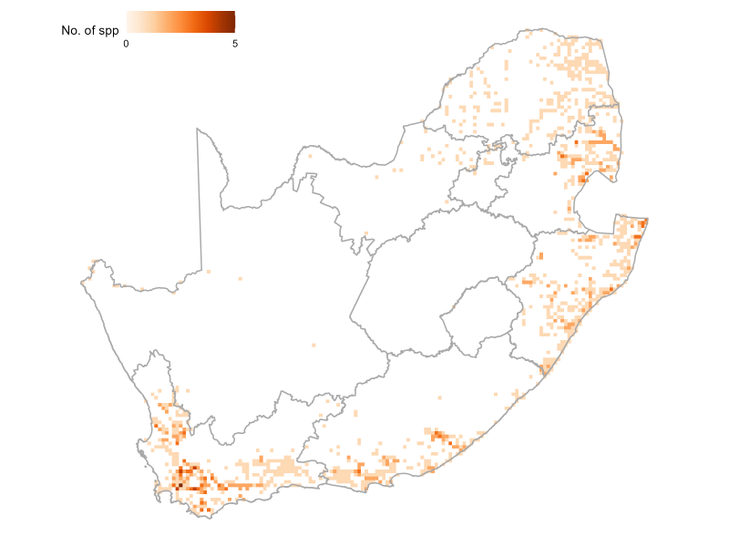
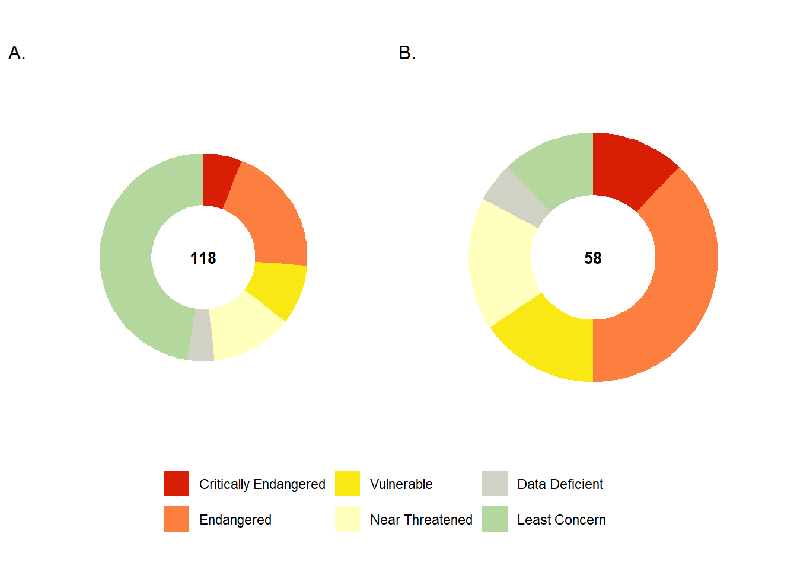
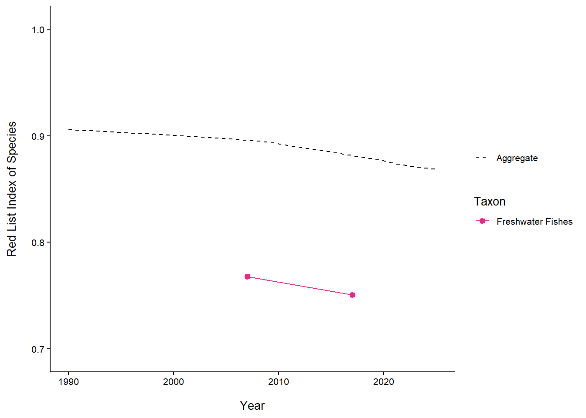
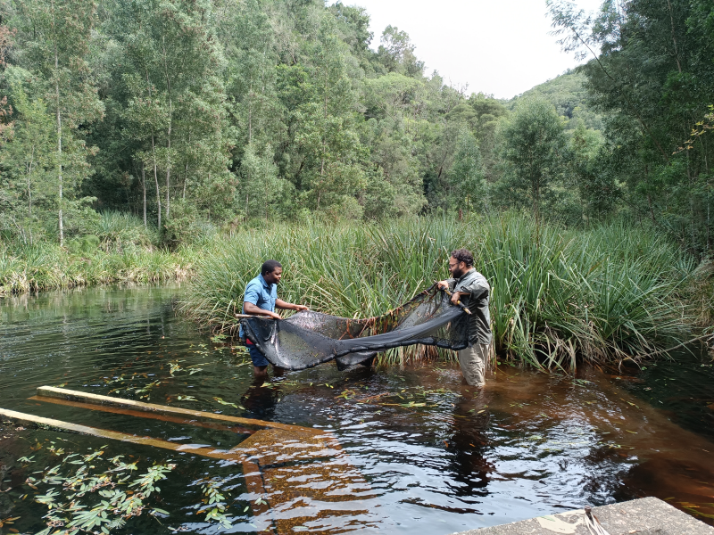
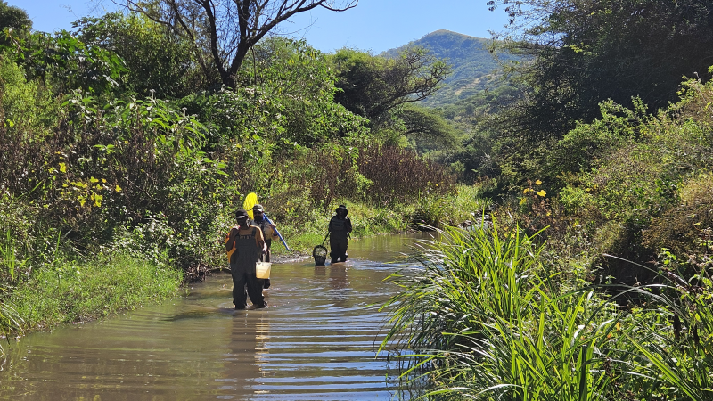
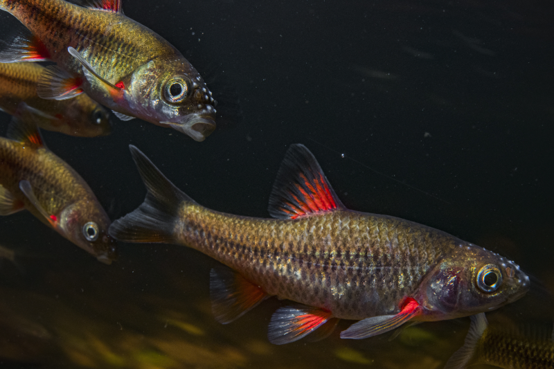
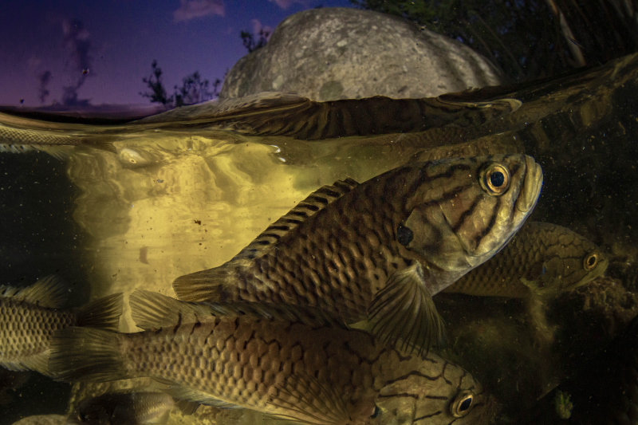
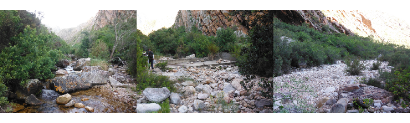
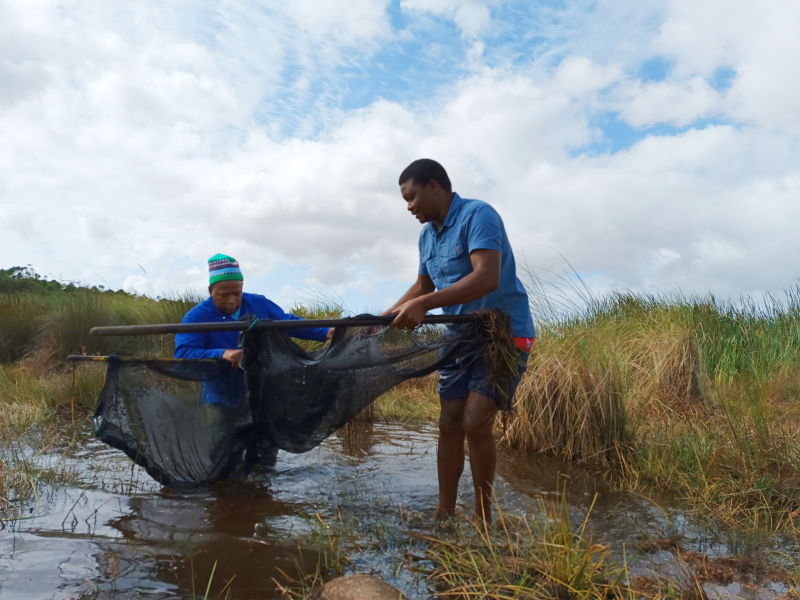

![]()


36%
of 118 assessed taxa are
Threatened
of 118 assessed taxa are
Threatened
26%
of 96 assessed taxa are
Well Protected
of 96 assessed taxa are
Well Protected
18%
of 96 assessed taxa are
Not protected
of 96 assessed taxa are
Not protected
Key findings
There are currently 139 formally described primary freshwater fishes in South Africa1, representing ~0.8% of the world’s freshwater fish species (~18 0002).
A comprehensive reassessment of extinction risk for 118 freshwater fishes was done in 2016/17 following the IUCN Red List Categories and Criteria.
A total of 42 taxa (36%) were classified as facing a high risk of extinction.
A total of 58 taxa (49%) are endemic to South Africa. A high proportion (38 taxa or 66%) of these face an elevated risk of extinction, thus placing sole responsibility on the country to protect and ensure persistence of these species.
The IUCN Red List Index (RLI) indicates that freshwater fishes have the second-lowest RLI score (0.75) compared to other taxonomic groups in South Africa. This shows that freshwater fishes are one of the most threatened groups, consistent with the broader patterns of the vulnerability of freshwater ecosystems in the country.
The major threats to freshwater fishes are invasive alien fishes, pollution, over-abstraction of water and habitat loss.
Threat status
The Red List assessment of all freshwater fishes in South Africa was done in 2016/17. A comparison with all comprehensively assessed taxonomic groups in the country indicated that freshwater fishes have the second highest proportion of species that are threatened with extinction (36%), second to sharks, rays and chimaeras Table 1. Overall, more than half (53% or 62 taxa) of freshwater fishes in the country are classified as Taxa of Conservation Concern (ToCC) (Figure 1). Most of these taxa occur in the Cape Fold Ecoregion (CFE)1,3,4. Most concerning is that almost all the endemic freshwater fishes (88% or 51 taxa) in the country are classified as ToCC (Figure 1 & Figure 2).
The elevated risk of extinction for freshwater fishes corresponds to the poor condition of rivers. Estimates from the freshwater ecosystem assessment indicate that 75% of overall river length in the country has been modified and over 50% of rivers are threatened. A reassessment of the Red List status for freshwater fishes in the country is planned for 2027 to integrate new information (including new species and distribution records) that has been generated from a number of projects that were undertaken since the previous 2016/17 assessment (see further details in Box 1). As these assessments are underpinned by correct taxonomy, ongoing work is focusing on expediting the resolution of the taxonomic statuses of selected priority groups ahead of the planned 2027 reassessment. Another important development over the last nine years was the establishment of the freshwater fish observation network that was constituted to provide a better coordinated approach to address the challenges that were identified in the NBA 2018.

| Taxon | Critically Endangered | Endangered | Vulnerable | Near Threatened | Data Deficient | Least Concern | Total |
|---|---|---|---|---|---|---|---|
| Overall freshwater fishes | 7 | 24 | 11 | 15 | 5 | 56 | 118 |
| Endemic freshwater fishes | 7 | 22 | 9 | 10 | 3 | 7 | 58 |
Trends – the Red List Index
The trend in species status over time was measured using the globally recognised indicator, the IUCN Red List Index (RLI) of species20. The RLI indices are calculated for specific taxonomic groups based on genuine changes in Red List categories over time. The RLI value ranges from 0 to 1, with the lower value indicating rapid progression towards extinction. A value of 1 signifies that all taxa are Least Concern, whereas a value of 0 indicates that all taxa are extinct. The RLI for freshwater fishes of South Africa was calculated at 0.75, revealing this group to be the second lowest among all assessed taxonomic groups in the country Figure 3. This relatively low (compared with other taxonomic groups) RLI reflects a high proportion of species facing elevated extinction risk, reinforcing the urgent need for targeted interventions to secure remaining populations and promote recovery of species that have suffered severe reductions in distribution ranges and population sizes.

| Taxon | Endemism | Change in Status (2007 to 2017 | Genuine change | Reason for change |
|---|---|---|---|---|
| Brycinus lateralis | Not-endemic | LC to NT | Genuine deterioration | Agriculture & aquaculture, invasive and other problematic species, Pollution. |
| Chiloglanis bifurcus* | Endemic | EN to CR | Genuine deterioration | Agriculture & aquaculture, invasive and other problematic species, Natural system modification, Pollution, Transportation & service corridor. |
| Chiloglanis emarginatus* | Endemic | NT to VU | Genuine deterioration | Agriculture & aquaculture, Natural system modifications, Pollution. |
| Ctenopoma multispine | Not-endemic | LC to VU | Genuine deterioration | Agriculture & aquaculture, Climate change & severe weather, Invasive and other problematic species, Pollution. |
| Enteromius gurneyi* | Endemic | LC to VU | Genuine deterioration | Agriculture & aquaculture, Climate change & severe weather, Invasive and other problematic species, Pollution, Residential & commercial development. |
| Enteromius lineomaculatus | Not-endemic | LC to NT | Genuine deterioration | Agriculture & aquaculture. Pollution. |
| Micropanchax myaposae | Near-endemic | LC to NT | Genuine deterioration | Agriculture & aquaculture, Climate change & severe weather, Energy production & mining, Residential & commercial development. |
| Oreochromis mossambicus | Not-endemic | NT to VU | Genuine deterioration | Invasive and other problematic species. |
NoteBox 2. A REFRESHing project underway to address gaps identified in the NBA 2018
 NRF-SAIAB and SANBI jointly led the REFRESH Project that was funded by the NRF-FBIP Programme. The project included freshwater fishes and six other taxonomic groups: fish parasites, freshwater crabs, large branchiopods, frogs and freshwater molluscs. The freshwater fish component was mainly aimed at filling knowledge gaps and renewing data to support updating management tools such as mapping of the National Freshwater Ecosystem Priority Areas (NFEPAs), feeding into the environmental screening tool, and assessment of threat status following the IUCN Red List criteria. Sampling was done in the Limpopo, Mpumalanga, KwaZulu-Natal, Eastern Cape and Western Cape provinces, and over 300 species occurrence records and over 165 COI barcodes were generated. The taxonomic statuses of a number of species in the genera Pseudobarbus, Labeo, Labeobarbus, Glossogobius and Enteromius were revised as part of this project, resulting in the description of six new species and revalidation of two species. Several other new species are in the process of being formally described. Four PhD students have graduated from projects directly linked to the REFRESH project, contributing towards human capacity development and transformation.
NRF-SAIAB and SANBI jointly led the REFRESH Project that was funded by the NRF-FBIP Programme. The project included freshwater fishes and six other taxonomic groups: fish parasites, freshwater crabs, large branchiopods, frogs and freshwater molluscs. The freshwater fish component was mainly aimed at filling knowledge gaps and renewing data to support updating management tools such as mapping of the National Freshwater Ecosystem Priority Areas (NFEPAs), feeding into the environmental screening tool, and assessment of threat status following the IUCN Red List criteria. Sampling was done in the Limpopo, Mpumalanga, KwaZulu-Natal, Eastern Cape and Western Cape provinces, and over 300 species occurrence records and over 165 COI barcodes were generated. The taxonomic statuses of a number of species in the genera Pseudobarbus, Labeo, Labeobarbus, Glossogobius and Enteromius were revised as part of this project, resulting in the description of six new species and revalidation of two species. Several other new species are in the process of being formally described. Four PhD students have graduated from projects directly linked to the REFRESH project, contributing towards human capacity development and transformation.




Pressures
Major drivers of threat to freshwater fishes in South Africa (Figure 4) and emerging pressures that are being detected and are not yet considered in IUCN Red List assessments are described below.
Existing pressures
Invasive alien freshwater fish species
South Africa is one of six global fish invasion hotspots21 and at least 55 freshwater fish species (alien and extralimital) have been introduced into novel environments in South Africa22. While invasive fish mainly affect native fish species through predation and competition, they can also have genetic impacts such as hybridisation and be vectors for the introduction of pathogens and parasites. The group with the most severe impacts in terms of predation is the north American centrarchids (three species of black bass (Micropterus spp.) and bluegill sunfish (Lepomis macrochirus). Invasive rainbow trout is a common invader in headwater ecosystems due to its preference for cooler water and has invaded headwater habitats mainly in the Western Cape, KwaZulu-Natal and Mpumalanga provinces. This is problematic as many headwater environments, especially those located in protected areas, provide refuge to threatened native fish populations. Many populations of smaller-bodied native species have been extirpated due to predation and competition by invasive alien species, especially in larger mainstream rivers9,23. Alien species also pose a risk to native species from a genetic perspective and an example is the invasive Nile tilapia (Oreochromis niloticus), which threatens the genetic integrity of the Mozambique tilapia (Oreochromis mossambicus) through hybridisation. Historically, the main driver for alien fish introductions has been angling, but other significant pathways for invasion have been aquaculture, the ornamental fish trade, inter-basin water transfers, biocontrol and conservation translocations.
Invasive fish populations are not limited to species originating outside the country as a number of indigenous species have established invasive extralimital populations outside their native ranges. Ill-conceived conservation translocations were historically a driver that led to the establishment of extralimital populations, some of which became invasive. For example, the Clanwilliam yellowfish (Labeobarbus seeberi) is a native cyprinid endemic to the Olifants-Doring system in the CFE, which has been translocated upstream of a natural barrier into the Twee River catchment to create a yellowfish sanctuary. While the yellowfish successfully established, they also had adverse impacts on the Critically Endangered and highly range-restricted Twee River redfin (Sedercypris erubescens). Presently, this redfin has been displaced from most of its native range by the Clanwilliam yellowfish and the Cape kurper (Sandelia capensis), another native CFE species that has an extralimital and invasive presence in the Twee catchment.
Another problematic native species is the African sharptooth catfish (Clarias gariepinus – LC), which was identified in the previous Red List assessment (2007) as an upcoming potential future threat, and it has spread as predicted24. The native range of this species is the northern ecoregions, and it extends from the Orange River system in the west to the Mtamvuna (KwaZulu-Natal) in the east1. As a result of inter-basin water transfers and human-assisted dispersal, it now has an extensive invasive range in all the major river systems and many smaller coastal catchments of the Western and Eastern Cape25. While it favours large lowland rivers and floodplain habitats,22 have shown that sharptooth catfish can readily invade sensitive headwater habitats. Both their ability to establish in these habitats and their impacts on sensitive headwater ecosystems remain poorly studied25.
Two invasive freshwater crayfish species, Cherax quadricarinatus and Procambarus clarkii are present in several river systems in South Africa. Recent records indicate that these species are expanding their ranges in South Africa and other parts of the region without much control. Of particular concern is the recent detection of P. clarkii in the Western Cape Province, a region with the highest concentration of highly threatened freshwater fishes in the country.

Loss of habitat quality and quantity
South Africa is a water-scarce country with many competing water users. While the National Water Act 36 of 199826 recognises the environment as a legitimate water user, environmental flow requirements and pollution mitigation measures are not consistently implemented or enforced on a national scale. While some species have a higher tolerance for polluted systems such as the African sharptooth catfish and several tilapia species, most other species are intolerant of polluted water, and this is reflected by the increasing incidences of fish kills due to mining effluent and poorly maintained and managed Wastewater Treatment Works (WWTWs).
Pollution in a range of forms (e.g., from agricultural and forestry effluent, domestic and urban wastewater, and industrial effluent) is impacting many freshwater fishes of conservation concern. Many rivers, especially mainstream and lowland reaches are impacted by pollution as 67% of rivers are considered degraded. For example, the Elands River (Inkomti system) flowing past Machadodorp to its confluence with the Crocodile River is polluted due to a paper mill and settlements situated close to the river as well as the poorly-managed WWTW. These sources of pollution are impacting the Incomati suckermouth catfish (Chiloglanis bifurcus – CR)27. The Elands River and its tributaries have been identified as a priority freshwater environment for fish conservation through the National Freshwater Ecosystem Priority Areas (NFEPA) (Driver et al. 2012; Nel et al. 2011a; 2011b), however this needs updating to reflect the current state of knowledge. The Tradouw redfin (Pseudobarbus burchelli – CR) is affected by hydrological modification, agrochemical pollution as well as poorly functioning sewage works that impact the Tradouw River downstream of Barrydale28. The Krom River minnow (Pseudobarbus senticeps – CR), restricted to the Krom River system, has been extirpated from its historic range mainly as a result of invasive alien species, while in the Assegaaibosch River, the population is impacted by excessive pollution from settlements in the sub-catchment8.
Anthropogenic pollution can be exacerbated by unsustainable water use patterns and over-abstraction of surface water sources. Complete abstraction during the dry season can result in localised extirpations, as was observed for the smallscale redfin (Pseudobarbus asper). This species was historically widespread throughout the Gouritz and Gamtoos river systems in the CFE but presently persist as highly fragmented populations in larger tributaries. Sampling results suggest that it has been lost from mainstream habitat due to the impacts of invasive piscivorous fish, while two lowland river populations downstream of Towerkop Nature Reserve are likely extirpated because of complete abstraction of surface water during the dry summer season. Lowland species such as Pseudobarbus asper are especially vulnerable to water abstraction impacts as there are often no refuge populations in upstream areas from where the species can recolonise. Examples such as these illustrate that impacts on habitat quality and quantity are significant pressures on freshwater fish and drive the highly threatened status of many taxa. Alarmingly, these pressures are only expected to worsen under future climate change predictions, especially for the CFE.

Exacerbated and emerging pressures
Freshwater systems across the assessment region face an expanding list of severe threats. These include acid mine drainage and mining-related sedimentation and effluent spills, forestry activities such as XXXX, alien invasive fish and their translocation, road-related chemical spills, agricultural impacts such as XXX, alien plant invasions and associated control activities. These impacts are exacerbated by failures in municipal water services, including non-functional sewage works and refuse dumping in sensitive areas of catchments. Illegal gold mining within sensitive riverbeds is a growing concern, directly damaging habitats that support already highly threatened freshwater fish species.
See Box X, Freshwater Species Realm.
Protection level

A protection level assessment was completed for 96 freshwater fish taxa in South Africa. Peripheral taxa with less than 5% of their range in the country were excluded. Freshwater fishes remain the most poorly protected of all assessed taxonomic groups: only 26% (25 taxa) are Well Protected, while the remaining 74% are under-protected – classified as Not Protected (17 taxa), Poorly Protected (33 taxa), or Moderately Protected (21 taxa). Among the endemics alone, 88% (49 taxa) are under-protected, and 68% (38 taxa) of these are threatened with extinction (Critically Endangered, Endangered or Vulnerable).
One improvement since the previous assessment was for the Verlorenvlei redfin (Pseudobarbus verloreni, EN), which shifted from Not Protected to Poorly Protected due to the declaration of a new protected area that now includes one of its subpopulations. However, of the seven Critically Endangered freshwater fish taxa, four – the Treur River barb (Enteromius treurensis), Barrydale redfin (Pseudobarbus burchelli), Pseudobarbus senticeps and Galaxias sp. nov. ‘slender’ – are Not Protected. All these four species have extremely restricted ranges, sometimes confined to a single river reach or sub-catchment, and no expansion of protected areas has included their distributions.
Thirty-three taxa are classified as Poorly Protected, with most also assessed as threatened or Near Threatened (25 taxa). Of these, 22 taxa are endemic to South Africa, meaning that the country is solely responsible for protecting these species. The primary reason freshwater fishes remain under-protected is that the existing protected area network seldom includes headwaters, full catchments, or sufficient lengths of rivers to buffer key threats. Moreover, many pressures – such as pollution and water abstraction – originate upstream or outside protected areas and cannot be mitigated from within them. While some pressures, such as invasive alien fishes, can be partially managed in protected areas by installing invasion barriers such as instream weirs, or restricting harmful land-use activities, current protection remains inadequate for most freshwater fishes.
Species recovery
As part of the Global Biodiversity Framework (GBF) Target 4 under the Convention on Biological Diversity, signatories are committed to taking urgent action to halt human-induced extinctions, reduce species’ risk of extinction, and improve their conservation status by 2030. Achieving this target requires coordinated efforts to prevent and reverse species declines, recover and conserve populations, and maintain genetic diversity, particularly among threatened species. South Africa has initiated a process for each of the taxonomic groups that have been comprehensively assessed following the IUCN Red List criteria to identify and prioritise species that are in urgent need of interventions to promote their recovery to contribute to achieving the GBF Target 4 goals.
See more details on the process followed for freshwater fishes here.
Monitoring
Freshwater fish monitoring is mandated across provinces and is generally embedded within protected area management plans under provincial agencies. However, specialised capacity within these agencies has declined, with many taxon-specific posts replaced by generalist roles. There is also generally a strong focus on larger charismatic mammal species as many of these are subject to commercial utilisation. Although monitoring plans exist, not all provinces have the expertise or resources to implement them fully across all taxonomic groups. Additional monitoring is undertaken by universities, NGOs and short-term projects, but no institution is dedicated to long-term freshwater fish monitoring.
NoteBox 4. Provincial monitoring efforts - Western Cape - CapeNature
The Western Cape Province has an extensive protected area (PA) network. Each provincial reserve or reserve complex has a protected area management plan (PAMP), which sets out the conservation targets and associated monitoring requirements for the PA. Most PAMPS have freshwater fishes and freshwater ecosystems as conservation targets and these are monitored on a three-year cycle to determine the status of freshwater fish species communities, identify changes in threats and inform adaptive management. Data from these monitoring events serves to inform conservation actions and decision support, and provide the basis for threat assessments and protection level analysis. A significant shortcoming is that many priority freshwater fish species or populations do not occur within the boundaries of PAs and are thus overlooked. This gap is often filled by conservation NGOs that partner with provincial conservation agencies to fill monitoring and surveillance gaps in the landscape. Western Cape examples are the Grootvadersbos Conservancy Trust and the Nuwejaars Conservancy, where both conservancies are currently focusing their efforts on the threatened Pseudobarbus redfin species and implementing monitoring and species recovery actions. In addition, the Freshwater Research Centre is implementing several species recovery projects aimed at CR and EN species in the southwestern Cape Fold Ecoregion.


The reduction in specialist capacity has led to a heavy reliance on external partners, whose expertise and continuity vary. Structured, continuous monitoring is essential, and its absence has already affected key initiatives: (1) conservation translocations of Enteromius treurensis into upstream reaches have been discontinued27; (2) taxa such as Kneria sp. nov. ‘South Africa’ (EN) remain undescribed and the Enteromius anoplus (LC) species complex remains taxonomically unresolved, thus limiting effective assessment; and (3) sporadic project-based surveys suggest that some threatened taxa are persisting, but in the absence of structured monitoring, population trends remain unknown.
The River Eco-status Monitoring Programme (REMP) has replaced the South African River Health Programme (RHP), but its purpose is to assess river ecological condition by integrating abiotic drivers (hydrology, geomorphology, water quality) and biotic responses (fish, invertebrates, riparian vegetation) relative to reference or baseline conditions. It informs ecological categories, compliance with Resource Quality Objectives and early-warning thresholds. Where implemented, REMP provides assemblage-level rather than species-specific fish data. In many provinces, the programme has been curtailed due to funding constraints. For example, Mpumalanga Province once had three aquatic scientists but now has only one, making monitoring of freshwater fishes extremely challenging.
Areas requiring monitoring:
Historical occurrence sites: re-survey locations where the species was previously recorded (some as far back as the early 1980s) to confirm whether populations persist.
Habitat condition: collect standardised data on habitat quality to inform Red List assessments and quantify extinction risk.
Sampling gaps: target under-sampled regions, particularly the Eastern Cape Province, where monitoring effort has been minimal.
Genetic sampling: collect subpopulation-level DNA samples to support BioBanking and long-term conservation planning.
Knowledge gaps
Although some progress has been made, considerable knowledge gaps still exist for a number of freshwater fishes from the Southern Temperate and Zambezian Lowveld ecoregions in the north-eastern sections of the country. Ongoing work is focusing on addressing taxonomic challenges for species in the genera Labeobarbus, Enteromius, Clarias, Kneria, Opsaridium, Anoplopterus, Ctenopoma and Microctenopoma.
A better understanding of the biological and ecological requirements of newly described taxa is also needed. In many cases, ecological studies were completed before taxonomic revisions, and it is unclear whether all taxa within a former species complex share the same ecological and life-history characteristics. Examples are species such as the Pseudobarbus burchelli complex that has been shown to comprise four distinct species with allopatric distributions. Similarly for the P. afer, G.zebratus and E. anoplus complexes.
Although rehabilitation needs for highly threatened species are often known by taxon experts, they are rarely formalised into species conservation or action plans. Without such plans, local implementation is difficult and opportunities to secure external funding are often lost. See freshwater fishes recovery action that might address this knowledge gap in the future.
Approach
Red List Assessment
The IUCN Red List criteria and categories are used to assess the threat status of species. Freshwater fish species were assessed in 2016, utilising multiple workshops, including a three-day in-person workshop hosted by the South African Institute of Aquatic Biodiversity (NRF-SAIAB) in Makhanda, Eastern Cape, and funded by the South African National Biodiversity Institute (SANBI). All available spatial data were collated, and experts reviewed specimen records related to these data. Incorrect data were georeferenced, with a high investment in updating all threatened species records. The freshwater fish checklist was based on a very specific definition of freshwater fishes and included species occurring in neighbouring countries Eswatini and Lesotho. See further details from a study on diversity, distribution and extinction risk of native freshwater fishes of South Africa4.
Protection level assessment
The species protection level assessment measures how effectively South Africa’s protected area network safeguards a species. It evaluates progress towards achieving a persistence target for each species – the level of protection needed to support long-term population survival. Because persistence depends on the area protected and on the ability of protected areas to reduce pressures that drive population decline, a protected area effectiveness factor is included in the calculation.
Species are classified into four protection categories:
| Protection level categories | Percentage of biodiversity target |
|---|---|
| Well Protected | ≥100% of the persistence target met |
| Moderately Protected | 50–99% of the target met |
| Poorly Protected | 5–49% of the target met |
| Not Protected | <5% of the target met |
This indicator has been applied to terrestrial and freshwater species in six taxonomic groups, including a representative sample of 900 plant taxa. Peripheral taxa with <5% of their range in South Africa were excluded. Protection levels have been calculated for 2 449 taxa in total.
How the Indicator is calculated
The indicator has two components:
Representation in protected areas - quantifies how much of a species’ distribution or viable population units fall within protected areas. This guides the prioritisation of species for protected area expansion.
Protected area effectiveness - adjusts for how well pressures such as invasive species, poaching, inappropriate fire regimes or damaging land use are controlled. Not all protected areas contribute equally to species persistence.
Species-specific conservation targets reflect either the area required to support a minimum viable population, or for freshwater fishes, the presence of at least ten viable subpopulations.
Scores for protected area effectiveness were developed with input from freshwater fish experts and protected area management agencies, based on species responses to management at specific sites.
Freshwater Fish Reassessment (2025)
The 2025 reassessment repeated the previous method using the 2018 protection level as the baseline, with minor spatial data updates from a 2022 workshop. Updated protected area boundaries meant the 2018 protection level assessment had to be recalculated with re-applied expert scores. No taxonomic changes were included in this cycle. A full update incorporating revised taxonomy and new Red List assessments is planned for 2027. Although this interim update has limitations, experts confirm that the findings align with current field observations. A technical report outlining the full methodology and limitations will follow.
Acknowledgements

| Contributor | Affiliation |
|---|---|
| Tsungai Zengeya | South African National Biodiversity Institute |
| Leon Barkhuizen | University of the Free State |
| Stan Rodgers | Limpopo Economic Development, Environment & Tourism (LEDET) |
| Darragh Woodford | University of the Witwatersrand |
| Olaf Weyl | South African Institute for Aquatic Biodiversity |
| Ashla Gohell | |
| Mandy Schuman | Northern Cape Department of Environment and Nature Conservation (DENC) |
| Dean Impson | Freshwater Research Centre (FRC) |
| Mohammed Kajee | University of Cape Town |
| Skhumbuzo Khubeka | Ezemvelo KZN Wildlife |
| Peter Romollo | Northern Cape Department of Environment and Nature Conservation (DENC) |
| Bruce Paxton | Freshwater Research Centre |
| Kagiso Mangwale | |
| Francois Roux | Mpumalanga Tourism and Parks Agency (MPTA) |
Recommended citation
Chakona, A., Jordaan, M., Shelton, J., Bills, R., Hoffman, A., Raimondo, D., Roux, F., Hendricks, S.E., Monyeki, M.S., & Van der Colff, D. 2025. Freshwater Fishes. National Biodiversity Assessment 2025. South African National Biodiversity Institute. http://nba.sanbi.org.za/.
References
1. Skelton, P.H. 2024. Freshwater fishes of Southern Africa: A complete guide. Struik Nature, Cape Town, South Africa 1–481.
2. Fricke, R. et al. (eds). 2025.
3. B. R., E. et al. 2017. A review of the biology and status of cape fold ecoregion freshwater fishes. Aquatic Conservation: Marine and Freshwater Ecosystems 27: 867–79.
4. A., C. et al. 2022. Diversity, distribution and extinction risk of native freshwater fishes of south africa. Journal of Fish Biology 100: 1044–1061.
5. Y., S. et al. 2024. Nine in one: Integrative taxonomic evidence of hidden species diversity in the widespread zambezi grunter, parauchenoglanis ngamensis (siluriformes: Auchenoglanididae), from southern and south-central africa. Zoological Journal of the Linnean Society 202: 121.
6. Y., S. et al. 2023. A new species of parauchenoglanis (auchenoglanididae: Siluriformes) from the upper lualaba river (upper congo), with further evidence of hidden species diversity within the genus. Journal of Fish Biology 102: 1387–414.
7. Mutizwa, T.I. et al. 2025. Review of the southern african slender stonebashers, genus heteromormyrus steindachner 1866 (teleostei: Mormyridae), with description of six new species. Journal of Fish Biology 1–36.
8. A., C. & S. P.H. 2017. A review of the pseudobarbus afer (peters, 1864) species complex (teleostei, cyprinidae) in the eastern cape fold ecoregion of south africa. ZooKeys 657:
9. A., C. et al. 2020. Reconstruction of the historical distribution ranges of imperilled stream fishes from a global endemic hotspot based on molecular data: Implications for conservation of threatened taxa. Aquatic Conservation: Marine and Freshwater Ecosystems 30: 144–58.
10. W. M., B. et al. 2020. Between an ocean and a high place: Coastal drainage isolation generates endemic cryptic species in the cape kurper sandelia capensis (anabantiformes: anabantidae. Cape region, South Africa. Journal of Fish Biology 96: 1087–1099.
11. D. N., M. & C. A. 2021. An integrative taxonomic review of the natal mountain catfish, amphilius natalensis boulenger 1917 (siluriformes, amphiliidae), with description of four new species. Journal of Fish Biology 99: 219–39.
12. M. J., K. et al. 2021. Allopatric differentiation in the enteromius anoplus complex in south africa, with the revalidation of enteromius cernuus and enteromius oraniensis, and description of a new species, enteromius mandelai (teleostei: cyprinidae. Journal of Fish Biology 99: 931–954.
13. F., Z. et al. 2025. Systematic review of pseudobarbus burchelli (teleostei, cyprinidae), with revalidation of p. Vulneratus and description of a new species. Zoosystematics and Evolution 101: 1271–96.
14. F., Z. et al. 2025. Pseudobarbus outeniqua sp. Nov., a new redfin species (teleostei, cyprinidae) from the cape fold ecoregion of south africa. ZooKeys 1239:
15. F., Z. et al. 2025. Pseudobarbus kubhekai sp. Nov., a new redfin (teleostei, cyprinidae) from KwaZulu-natal, south africa. Zoosystematics and Evolution 101: 1–6.
16. M., R. et al. 2025. On the conflict between science and ethics: The case of the moggel, labeo umbratus (teleostei: Cyprinidae) from south africa. Journal of Fish Biology 1–13:
17. M., S. et al. 2025. Revalidation of enteromius crocodilensis (fowler, 1934) from synonymy with the disjunctly distributed enteromius argenteus (günther, 1868) based on molecular and morphological evidence. Journal of Fish Biology 106: 725–40.
18. M., S. et al. 2024. Naming the other cousin: A new goldie barb (cyprinidae: Smiliogastrininae) from the northeast escarpment in south africa, with proposed taxonomic rearrangement of the goldie barb group in southern africa. Journal of Fish Biology 105: 1137–50.
19. D. J., W. et al. 2025. Freshwater fishes of the Waterberg aquatic ecoregion, South Africa: Diversity, taxonomic conflicts and conservation concerns. Journal of Fish Biology. https://doi.org/10.1111/jfb.70007
20. Butchart, S.H.M. et al. 2004. Measuring global trends in the status of biodiversity: Red list indices for birds. PLoS Biology 2: https://doi.org/10.1371/journal.pbio.0020383
21. F., L. et al. 2008. Fish invasions in the world’s river systems: When natural processes are blurred by human activities. PLoS Biology 6: 28.
22. B. R., E. & O.L.F. Weyl. 2014. A review of current knowledge, risk and ecological impacts associated with non-native freshwater fish introductions in south africa. Aquatic Invasions 9: 117–132.
23. J. A., W. et al. 2016. Spatial extent and consequences of black bass (micropterus spp.) invasion in a cape floristic region river basin. Aquatic Conservation: Marine and Freshwater Ecosystems 26: 736–748.
24. W. R. T., D. et al. 2009. The status and distribution of freshwater biodiversity in southern africa, Skelton, P. (eds),. IUCN; Grahamstown, Gland, Switzerland.
25. O. L., W. et al. 2016. A review of clarias gariepinus invasions in brazil and south africa. Journal of Fish Biology 89: 386–402.
26. Africa, S. 1998. National water act 36 of 1998. Government Gazette 19182:
27. Roux, F. & A. Hoffman. 2017. Enteromius treurensis. The IUCN red list of threatened species 2017. 2572 100159826. https://doi.org/10.2305/IUCN.UK.2017-3.RLTS.T2572A100159826.en.
28. M. S., J. et al. 2024. Status and distribution of a novel redfin lineage, pseudobarbus sp.“burchelli tradouw” from the cape fold ecoregion of south africa. African Journal of Aquatic Science 49: 29–39.
29. A., C. et al. 2014. A new species of redfin (teleostei, cyprinidae, pseudobarbus) from the verlorenvlei river system, south africa. ZooKeys 453:
30. A., C. et al. 2019. Distribution and summer habitat associations of three narrow-range endemic fishes in an intermittent southern temperate mediterranean river system. Fundamental and Applied Limnology 193: 65–77.
31. M. S., J. et al. 2020. Protected areas and endemic freshwater fishes of the cape fold ecoregion: Missing the boat for fish conservation? Frontiers in Environmental Science 8: 502042.